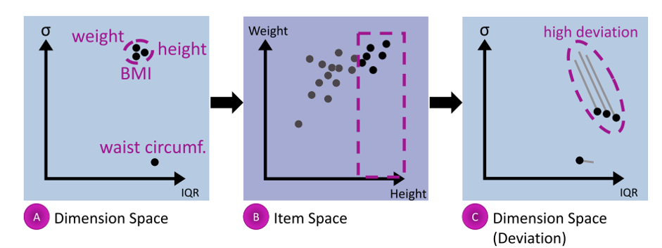
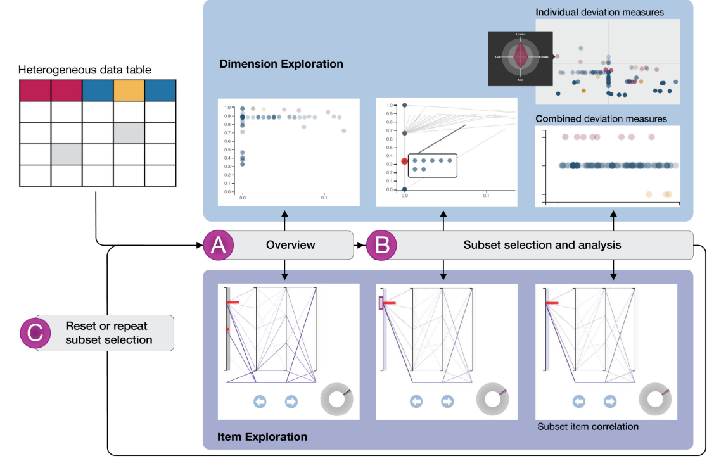
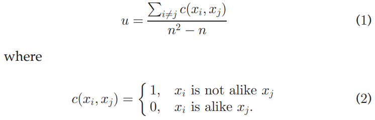
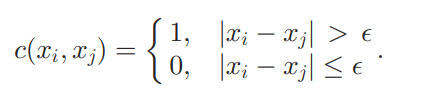
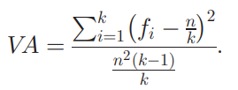
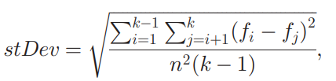
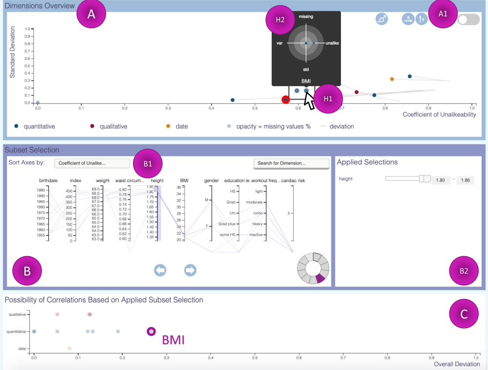

论文：Integrated Dual Analysis of Quantitative and Qualitative High-Dimensional Data
作者：Juliane Muller , Laura Garrison , Philipp Ulbrich , Stefanie Schreiber, Stefan Bruckner , Helwig Hauser , and Steffen Oeltze-Jafra
发表：IEEE VIS 2021
本文通过为定性数据引入与定量数据统一的测度，改进了用于定量高维数据分析的Dual Analysis Framework。 用户可以同时从数据维度（列）和数据项（行）两个角度分析数据集，探索并验证数据维度间的相关性等。
背景
在高维数据的分析任务中，定性数据(qualitative/categorical)常用于变量分组等操作，很多常用于定量数据(quantitative/numerical)分析的描述统计方法无法直接应用于定性数据。定量和定性数据的集成分析和相关性探索面临挑战
本文是对Dual Analysis Framework(TVCG 2011)的改进
该框架支持用户通过交互的可视分析方法同时从数据维度(列)和数据项(行)两个角度分析高维数据，探索并验证数据维度间的相关性等，在 “wide and shallow” 类型数据的分析任务中尤其有效
wide and shallow: many dimensions (columns in a table), few observations(rows), and often a high frequency of missing values

本文以上图为例，具体说明Dual Analysis Framework的分析流程。散点图A中，每个点对应一个维度(如身高、体重等)的统计特征，横轴表示该维度的四分位差值，纵轴则表示其标准差。散点图B中，每个点对应一个数据项，横轴表示身高，纵轴表示体重。用户综合观察两个视图，获取数据集概览并生成假设。例如，容易发现身高、体重和BMI这三个维度的统计特征相似度较高，腰围的统计特征则具有明显差异。用户据此在B中框选身高大于1.8m的数据项子集进行探索，此时，系统将展示各维度统计特征的变化。如图C所示，体重和BMI这两个维度的统计特征发生了与身高维度类似的较大偏移(以偏移线表示，线的起点为整个数据集的统计特征，与A中各点一一对应，线的终点则对应用户所选数据子集的统计特征)，据此可推断身高、体重与BMI三个维度间存在一定的相关性
不足：由于缺乏统一的统计指标，该方法只适用于定量数据，无法探索定性数据与定量数据间的相关性(如性别与身高等)
相关工作
高维数据分析
SPSS等工具虽然提供了多种统计和可视化方法，但对交互式探索的支持较少
在可视分析中(如Tableau/Polaris)，定性数据常用于数据集的筛选(dimensional filters/subset selectors)，定性和定量数据的集成分析面临挑战，此外，还有一些通过因果关系分析(causality analysis)和相关矩阵(correlation maps)探索维度间相关性的尝试
定性数据统计
定量数据的统计指标大多不适用于定性数据，定性数据的统计指标主要关注数据的diversity(the variation around a measure of central tendency / pairwise differences between data items)
文中介绍了variation ratio, normed entropy, index of qualitative variation和coefficient of nominal variation等定性数据统计指标
此外，生态学和社会科学等学科也有一些领域专用的统计指标
方法

本文系统的整体分析流程与Dual Analysis Framework类似，主要区别在于维度空间的散点图将同时展示定量数据和定性数据的统计特征。如图所示，用户首先获取数据集概览，然后选择感兴趣的子集，跟踪各维度统计特征的变化，生成关于各维度间相关性的假设并综合各视图进行验证和进一步探索
统计指标
本文在Dual Analysis Framework的基础上，通过为定性数据引入与定量数据相对应的统计指标，实现定性与定量两类数据的集成分析
- propotion of missing items(缺失值比例)
可直接应用于定性和定量两类数据
- coefficient of unalikeability(不相似系数)

若对于所有数据维度，公式中的“相似”(alike)均采用统一定义(如相等)，则定量数据的计算结果往往远大于定性数据。为使两类数据的不相似系数保持基本一致，确保其具有可比性，对于定性数据，公式中的“相似”可定义为相等，对于定量数据，则可按下式定义

差值阈值可定义为该维度极差的5%等
- variation around the mean
为了衡量数据相对于均值的偏离程度，对于定量数据，可直接采用方差/标准差
对于定性数据，本文引入了Wilcox Indices在1967年的工作(详见Indices of Qualitative variation)，数据归一化后，其方差可用下式模拟

标准差则可用下式模拟

可以验证，方差的模拟值近似为标准差模拟值的平方
- modality
对于定量数据，可采用核密度估计(Kernel density estimation)获取数据分布情况后统计其极大值个数，对于定性数据，则可以设置频率阈值，统计频率大于阈值的类别数等
可视分析系统

本文的可视分析系统包含3个视图，其中A，C视图描述数据集维度空间的性质，B展示数据集概况并支持数据筛选，与Dual Analysis Framework类似，本文系统的各视图间协调关联，并支持多种交互
A视图展示所有维度的统计特征，用户可根据需要调整横纵坐标对应的统计指标(即上文介绍的不相似系数等)，选中某个维度后，系统将以雷达图形式在附近展示该维度的所有统计指标，定量、日期和定性三类数据维度分别用蓝色、黄色和红色编码(日期视为特殊的定量数据，常用于数据集筛选，很多统计指标没有意义)；
B视图以平行坐标轴形式描述数据集概况，用户可按照不同的统计指标对维度进行排序，维度中的缺失值对应该坐标轴底部的特殊位置，右侧工具栏用于数据筛选，平行坐标轴会根据用户设置的筛选条件实时变化。与Dual Analysis Framework类似，A视图中也会以灰色偏移线形式展示子集筛选前后不同维度统计特征的偏移；
C视图用于辅助观察子集筛选造成的各维度统计特征的变化，定量、定性和日期类数据各占一行，横轴表示综合各统计指标计算所得的维度整体偏移量大小，偏移量最大的维度与用于子集筛选的维度间很可能存在相关性；
分析流程：用户综合观察A, B两视图，了解数据集概况，通过点选等交互方式探索感兴趣的维度，生成有关维度相关性的假设，再根据假设筛选数据，观察A, C视图中各维度统计特征在筛选前后的变化，重点关注整体偏移量最大的维度，并结合平行坐标轴提供的信息验证或改进假设
总结
作者指出，SPSS等传统方法在验证已有假设时效果良好，但很难帮助用户发现新的数据模式(维度间的相关性等)
本文为定性和定量两类数据引入统一的统计指标，并据此改进了Dual Analysis Framework，用户可从数据维度和数据项两个角度探索数据集，生成关于维度相关性的假设并结合视图验证或改进，具有良好的通用性
不足：对于平均值等常用于定量数据的统计指标，作者没有找到适用于定性数据的模拟方法
✉️ zjuvis@cad.zju.edu.cn